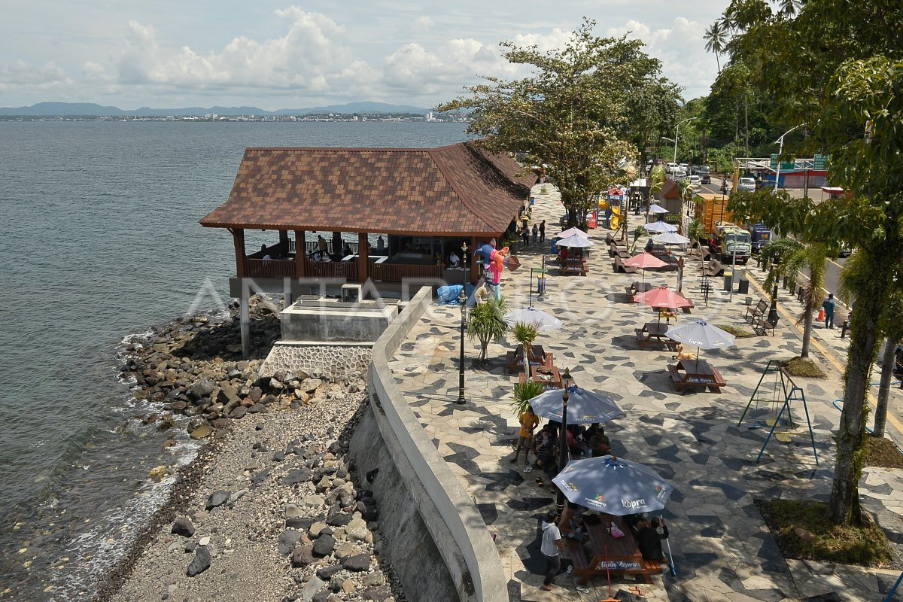

Terletak di Manado, Sulawesi Utara, Pulau Malalayang menawarkan pantai yang indah dengan air yang jernih dan pasir putih.
Pulau ini menjadi tujuan favorit bagi para wisatawan yang ingin menikmati pemandangan laut, snorkeling, dan kegiatan menyelam.
Dikelilingi oleh keindahan alam yang masih alami, pengunjung dapat melihat beragam biota laut dan merasakan suasana yang tenang dan damai.